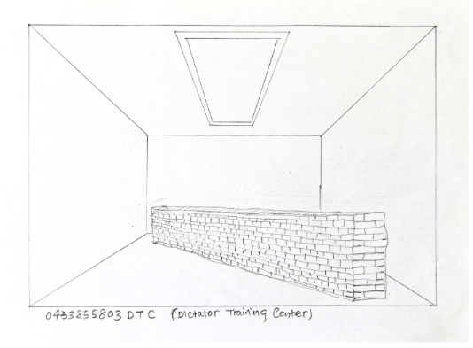

Texts > 2025
on Dictator’s Training Centre
Michelle (M) Media writer:
You lived and made art in Australia for a long time before returning to China, and have since spent time between both places. I’m curious — how did returning to China after your Master's studies impact the creation of Teaching Lies originally? And even now, how does moving between these two cultures continue to shape your work? A critic once described your work as having "a witness’s practice and a reflection on 'Chineseness.'" What does that description mean to you personally?
Wang Zhiyuan (W):
Thank you for your thoughtful questions.
At the end of 1989, I came to Sydney from Beijing. Eleven years later, at the end of 2001, I returned to Beijing. After spending 18 years there, I came back to Sydney in 2019 and have been here ever since. During this period, I was fortunate to experience two major historical opportunities:
The first was the wave of Chinese artists going abroad after the "Reform and Opening Up" era. This coincided with the West’s strong push for globalization, during which Chinese artists overseas enjoyed the benefits of being accepted and “integrated” into Western societies.
The second opportunity spanned from China's entry into the WTO in 2001 to around 2018 — the best period in China’s history for “integration into the world.” I happened to be living in Beijing during that time. Unfortunately, all of this now belongs to the past.
During these years, I experienced life and art-making in both Australia and China. The most profound realization I had was this: in Australia (and the West more broadly), because of language barriers and unfamiliar environments (I arrived in Sydney at the age of 32), I believe that almost all immigrant artists find it hard to fully integrate into local life (like novelist Milan Kundera described). Let alone "intervene" in it — we remain outsiders at best.
As a result, Chinese artists (myself included) often adopted a strategy of referencing Chinese traditions in content (legends, scriptures, herbal medicine, motifs), while aligning with Western popular artistic styles in form. This made the work feel both "fresh" and distinct from local artists. For example, my 7 pieces of work “Two from One” (1998) was collected by the National Gallery of Australia, and my 2000 graduate project “Fragments“ — consisting of 40 pieces — was collected by the Queensland Art Gallery | Gallery of Modern Art (QAGOMA). These both followed this hybrid strategy.
However, after I returned to Beijing in 2001, the situation changed completely. As a Han Chinese living in a majority Han country, there were no issues of "multiculturalism." With time, through language and cultural immersion, I naturally became emotionally involved and could truly engage with the environment. This led to more reality-facing works like “Teaching Lies” in 2005.
It’s interesting to compare the works I created in Sydney and those in Beijing. In Sydney, my works often contained Chinese or Eastern cultural elements and symbols; in Beijing, they did not. One approach conformed to the Western strategy of “multiculturalism,” while the other confronted the lived environment directly.
During my Beijing years, aside from “Teaching Lies”, all my works essentially revolved around one central question: What does " situatedness " mean? For example, the wall text installation “Close to the Warm” (2013) and the performance piece “Cleaning Operation” (2014) were both reflections on and attempts to engage with this issue.? From modern to contemporary art, Chinese artists have primarily been in a process of learning from the West — in both concept and materials. I believe the key is to transform what we’ve learned into our own language, so that the artwork can exist within local problems and environments, and even become part of people’s everyday lives. That is the meaning of “situatedness” and why I think art can survive — even thrive — in the long term.
M:
What are your thoughts on the existence of galleries or interventions like Passage in Sydney’s art scene? And more broadly, how do you feel about contemporary Australian art and society today — is there anything you find particularly exciting, or anything you’re more critical of?
W:
The cycle of artwork — gallery — market is a structure that the global art world, including Australia, is familiar with and accepts. We are all used to it. But even as early as 2005 with “Teaching Lies”, I already wanted to step outside this cycle. Back then, I had a vague feeling that this art world had become a self-contained loop — a small, closed circle of self-amusement. I felt I needed to step out. But to where? I wasn’t sure yet. Still, many of my works since then have been attempts to explore and search for that direction.
In May last year, I received an invitation from Passage Gallery. After learning about their past exhibitions, I was genuinely pleased. It felt like the gallery also wanted to break out of that “closed loop.” I felt as though I had found new friends.
M:
Tell me about how you curated “Dictator’s Training Centre” with Passage Gallery. Why did you choose to revive Teaching Lies now, and what does the new title suggest — either about the work itself, or the times we’re living through?
W:
The difference between “Teaching Lies” (2005) and the recent “Dictator’s Training Centre” is not only the subject matter. There is also a significant shift in the work’s structure. In “Teaching Lies”, I included my personal phone number in the work — it was, in a way, a personal joke. But this new work was created together with several of the organisers at Passage Gallery. They helped build the installation and now maintain a communication platform for the audience. The contact information on the work is the gallery’s, not mine. This excites me because it shows I’m no longer focused on “authorial rights.”
So rather than calling this an artwork of mine, I would say I merely provided an artistic “form”. The final work is truly a collective piece, and that makes me very happy. In fact, I hope this format can be reused by anyone, in many places, to teach different “subjects.” That is the potential of art — to re-enter people’s lives and take on a role no other field can: to enable real communication.
We are living in a time utterly different from the past. On a micro level: with mobile phones and the spread of personal media, people now receive only the information they prefer. The benefit is personalization, but the downside is fragmentation — everyone gets different information, and as a result, meaningful conversation becomes nearly impossible. Friends, spouses, parents and children — often all they can do is argue. Everyone seems to be a “little dictator” — believing “I am always right”.
On a macro level: we are now in a “post-globalisation” era, where populism is increasingly visible across regions and nations, often through media manipulation. This is fertile ground for the rise of dictators. Polarisation will only worsen.
The “Dictator’s Training Centre” is meant to offer a space for conversation — for people to share and reflect on what “dictator” might mean in our current context.
April, 2025
• Sketch of the work Dictator’s Training Centre exhibited at Passage Gallery:

The Work “Teach Lie”, 2005
This works I inspiration of from Beijing street. On the wall of Beijing street or road everywhere appear a lot of small advertisement by spray or paste from private small companies since late 90's, it's look like socially directed art and reflect realest situation and process of China rebuilt and reconstruction social life.
I employed two “Nongmingong”（1）workers to build a size 500x90x30cm wall by old bricks and use black spray to write a large advertisement:
15712966740教撒谎
(My mobile phone number and three Chinese words in English
means:15712966740 Teach Lie)
My art form is appropriation from Beijing street, but I changed the content of advertisement.
These small advertisements on street s same as new urban folk art, they directed reflect people's desire. During the show time I was received a few phone from audience, they ask me if how much per hour? I said to them I am not a teacher that just for a joking.
I remember this work cost a total of 75 RMB (around 10 USD). At the time, there happened to be a pile of unused old bricks in the courtyard where the exhibition was being set up, so I used them as the material for the piece. The cost covered the labor of two “Nongmingong” workers who built the wall, the fee for spraying the text onto the wall, and the purchase of two cans of spray paint.
The work Teaching Lies was shown again in 2011 during my solo exhibition, but this time it was displayed outdoors.
（1）“Nongmingong” （Rural migrant workers）are rural-registered Chinese who live and work in cities. With little education, they mostly do low-paid, physical labor. Despite building modern cities, the hukou system denies them and their children basic rights like schooling—a system that remains unchanged.

The Work “Teach Lie”, 2005

The Work “Teach Lie”, 2005

The Work “Teach Lie”, 2011